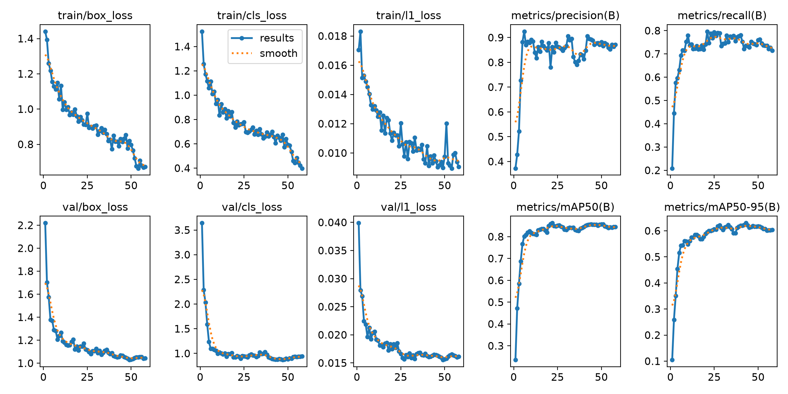
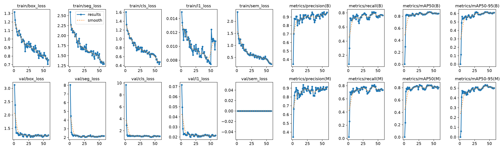
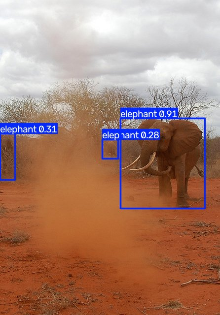
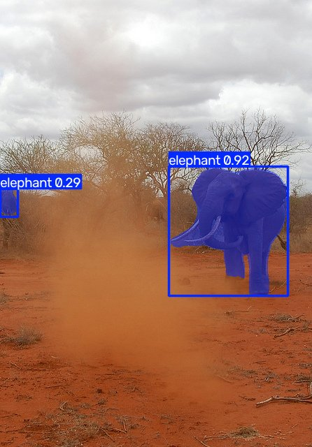

YOLO26n-seg · Polygon Segmentation · Client-side
ตรวจจับ ช้าง ม้าลาย ยีราฟ
แบบ Polygon บนเบราว์เซอร์
อัปโหลดภาพหรือเลือกภาพตัวอย่าง โมเดลจะวาดเส้นขอบ polygon รอบสัตว์แต่ละตัว พร้อมบอกชนิด ความมั่นใจ และพื้นที่ที่วัตถุครอบคลุม ประมวลผลทั้งหมดในเครื่องของคุณ ไม่มีการส่งภาพขึ้นเซิร์ฟเวอร์
elephant
zebra
giraffe
ลากภาพมาวางตรงนี้ หรือกดปุ่ม เลือกภาพ
กำลังโหลดโมเดล…
ผลการเทรน: Rect vs Polygon
ใช้ภาพชุดเดียวกันจาก COCO 2017 เทรน 2 แบบ ประเมินบนชุด test ที่โมเดลไม่เคยเห็น
| Split | ภาพ | elephant | zebra | giraffe |
|---|
จำนวน Object ต่อ Label ทุก label มากกว่า 100 ตามเกณฑ์
| Label | Rect mAP50 | Rect mAP50-95 | Polygon Box mAP50 | Polygon Mask mAP50 | Polygon Mask mAP50-95 |
|---|




วิธีทำงาน
- Letterbox ย่อภาพให้ด้านยาวเป็น 640 คงสัดส่วน เติมขอบสีเทา แปลงเป็น tensor 1×3×640×640 ค่า 0–1
- ONNX Runtime Web รันโมเดล YOLO26n-seg ที่ export จาก best.pt ด้วย WebAssembly ในเบราว์เซอร์
- Decode output0 ให้กรอบ ความมั่นใจ class และสัมประสิทธิ์ mask 32 ค่า output1 คือ prototype mask 32×160×160
- Mask คูณสัมประสิทธิ์กับ prototype ผ่าน sigmoid ตัดเฉพาะในกรอบ threshold 0.5
- Polygon หาเส้นขอบของ mask แล้วลดจำนวนจุดด้วย Douglas–Peucker วาดเป็น polygon บนภาพจริง